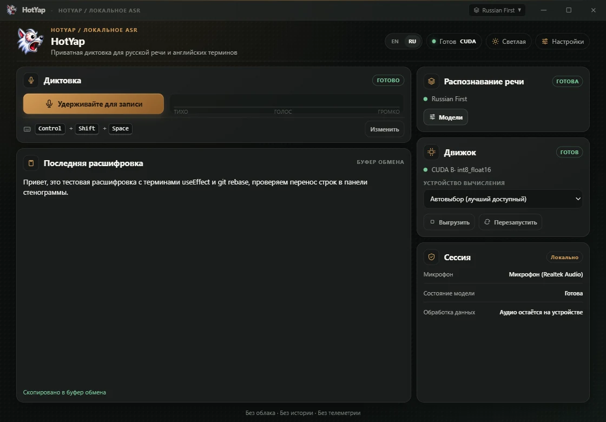

RU + EN
Два языка. Одна мысль.
Диктуйте по-русски с английскими терминами. Контекст распознавания помогает сохранять TypeScript, Docker и useEffect в латинице.
РУССКИЙ + ENGLISH / ГОЛОСОВОЙ ВВОД
Русская речь. Английские технические термины. Диктуйте задачи, сообщения и промпты — HotYap помогает сохранить язык вашего стека в расшифровке.
 LOCAL FIRST — YOUR DESKTOP
LOCAL FIRST — YOUR DESKTOP
«Проверь useEffect и обнови Docker-контейнер»
01 / ЗНАКОМЫЙ ЯЗЫК. НОВЫЙ СПОСОБ.
RU + EN
Диктуйте по-русски с английскими терминами. Контекст распознавания помогает сохранять TypeScript, Docker и useEffect в латинице.
LOCAL
В локальном режиме речь распознаётся на вашем компьютере. Без истории записей и телеметрии.
PUSH TO TALK
Начните запись горячей клавишей. Результат попадёт в буфер обмена — для сообщения, документа или редактора.
02 / ВАШ НОВЫЙ РАБОЧИЙ ИНСТРУМЕНТ
Задача коллеге, сообщение команде или промпт для ИИ-ассистента. Продиктуйте мысль и вставьте расшифровку там, где работаете.
Как это работает ↗
03 / ТРИ ШАГА ДО ТЕКСТА
Сочетание по умолчанию. Можно изменить в приложении.
Используйте настраиваемое сочетание или кнопку записи.
Отпустите клавиши, когда закончите. HotYap распознает запись.
Вставьте текст из буфера обмена туда, где он нужен.
04 / КОНТРОЛЬ НА ВАШЕЙ СТОРОНЕ
Выберите модель под свой компьютер и задачи. Загружайте её и управляйте ей прямо в HotYap.

Перед началом
Да. Сначала загрузите локальную модель, затем распознавайте речь без подключения к интернету. Облачное распознавание и внешняя обработка текста требуют доступа к выбранному провайдеру.
Нет. Локальные модели работают и на CPU. Совместимая видеокарта NVIDIA с CUDA может ускорить распознавание. Скорость зависит от оборудования и выбранной модели.
Аудио отправляется при выборе облачного распознавания. Если включить внешнюю постобработку текста, расшифровка также отправляется её провайдеру. Обе функции необязательны; API-ключи хранятся в системном хранилище учётных данных.
Установщики пока не подписаны. Основная проверенная платформа — Linux; сборкам Windows и macOS требуется более широкое тестирование. В Linux на Wayland используйте кнопку записи, если глобальная горячая клавиша недоступна.
Готовы начать?
Установите HotYap, загрузите модель и попробуйте первую диктовку.
Выбрать установщик ↗Ранняя альфа · Установщики пока не подписаны
Основная проверенная платформа — Linux. Сборки Windows и macOS доступны для раннего тестирования.